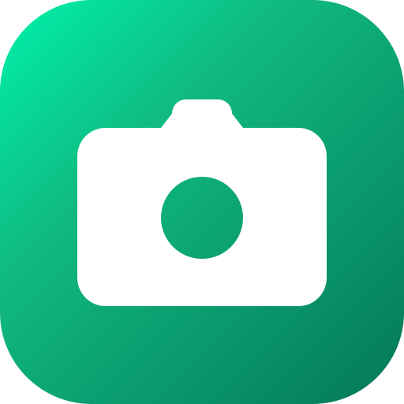
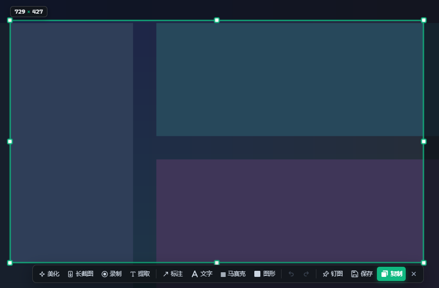

截图与标注
快速选择区域，立即添加箭头、文字、马赛克与图形，然后复制或保存。

PinShot
常用能力都在截图选区旁，需要时触手可及，不需要时安静隐身。
快速选择区域，立即添加箭头、文字、马赛克与图形，然后复制或保存。
自动拼接长页面，完整保存超出屏幕的内容。
从图片中提取文字，识别过程在本机完成。
录制选定区域，并导出 WebM 或 MP4 文件。
将截图置顶参考，随时找回最近三张截图。
PinShot 的截图、历史和 OCR 设计为在本机处理。截图功能不会自动上传屏幕内容，也不依赖云端识别服务。
免费下载，开源透明。适用于 Windows。